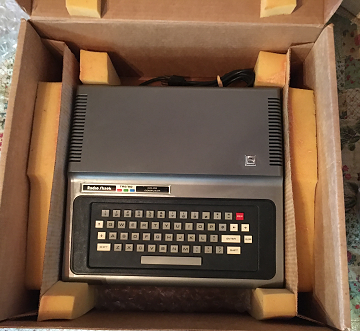
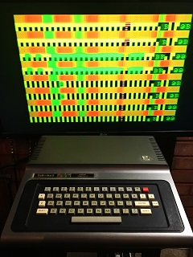
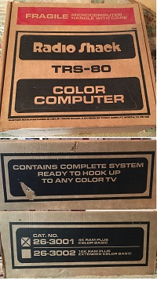

8/29/2022 1:30 AM: -- My First Computer Ever!
In 1981 not long out of high-school I had just turned 18 years old and I got a job working for a painter doing prep work for $5 an hour tax-free. In two weeks I had saved enough to buy my very first computer.

It was a computer just like this one: a Radio Shack TRS-80 Color Computer w/ 4k RAM for $400.
Actually, I picked this one up from eBay just the other day for a little over $100. Cosmetically it is in very good condition!
The computer came w/ only 4K of RAM. I had no idea what that meant at the time. Over the next few weeks (or couple of months) I began realize just how limiting that amount of RAM is.
To give you an idea just how small amount of RAM that is, you could only fit 14 tweets w/ a max 280 characters each. Also, the text screen itself uses 512 bytes or (.5K). So in reality a machine language program would only have 3584 bytes for both the program and data. BASIC programs have even less than that available since BASIC uses up some memory for itself. If you were to put a machine language program on a cartridge that would give you up to 16K ROM for your program.


As you can see to the left this 4K CoCo1 has a video problem. Which means I will have to break the seal and open it up to fix it. Usually, but not always, this is because the chips sitting in sockets have oxidized and you just need to take them out and re-seat them. However, sometimes it could be a bad RAM chip or other chip that needs replacing.
It’s too bad I’ll have to break the seal to open it up. But right now the plan is to leave this machine as stock.
I am not looking to have a big collection of CoCo’s or retro computers. But I do want this one to remain stock as a reminder of my first computer. It has nostalgic value of a time when every single byte counted. Also, I would like to use it to test FPGA and software emulators accuracy.